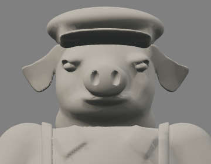
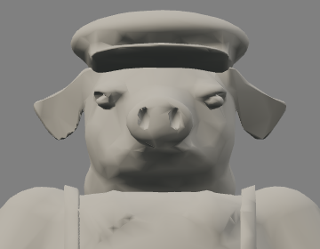
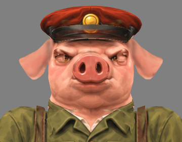
Reference and model use equal standing height (cap to sole), without changing prototype dimensions. Head views use 560 px/unit; native views use 58 px/unit. Front/profile use the approved turnaround. Three-quarter/gameplay use the original illustrated sprite, whose view angle is approximate. Body proportions remain pending a separate correction.



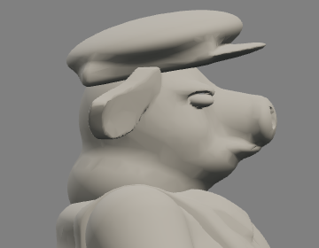
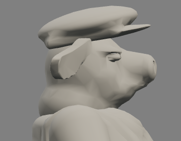
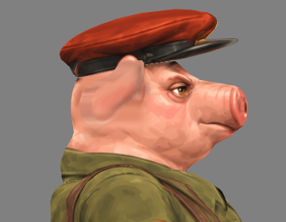

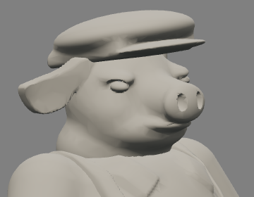
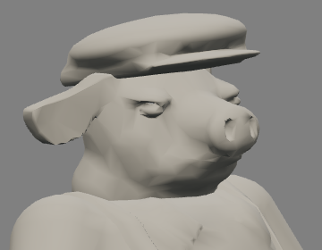
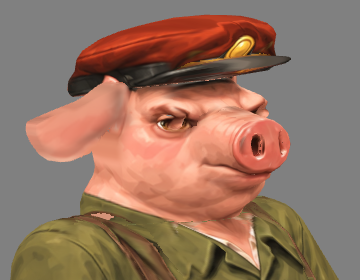
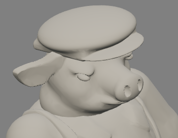
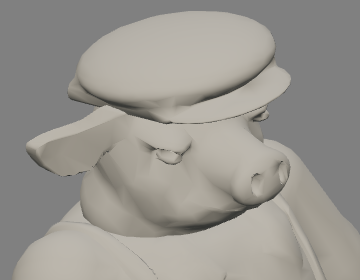
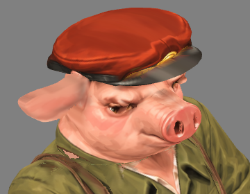
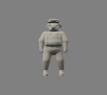
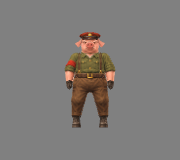
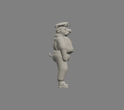
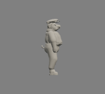
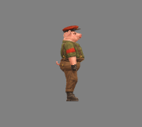
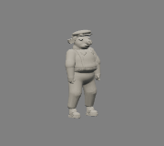
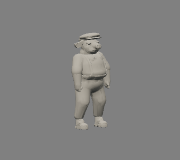
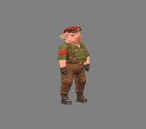
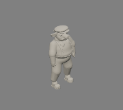
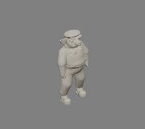
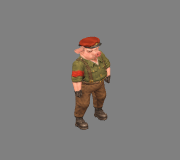